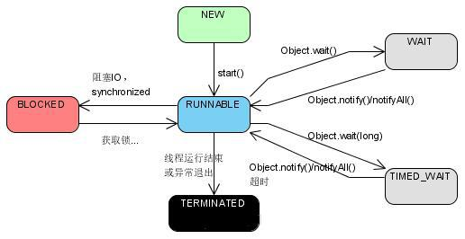

为什么需要学习并发编程
源于JD的硬性要求，尤其是大厂
网络上面经高频出现，且水平参差不齐，做归纳整理耗时耗力，难辨真伪
是成为高级工程师的必经之路
几乎所有程序或多或少需要并发和多线程
线上服务用户量大，并发量轻松过万，如果不使用并发编程，性能很快成为瓶颈
在职场打怪升级过程中，并发编程是绕不过去的boos
众多框架的原理和基础
spring中对线程池、单例的应用
数据库中的乐观锁思想
log4j2对阻塞队列的应用
课程学习概述
知识需要成体系，否则很容易忘记
课程内容包含：
8大核心基础
java内存模型
死锁
高频面试题+面试加薪技巧
分析本质、深入原理
深入原理：剖析背后设计理念
java内存模型——底层原理，修炼内功
实现多线程的办法？是一种还是两种？
- 正确的说法
oracle官网说法：https://docs.oracle.com/javase/8/docs/api/java/lang/Thread.html
有两种方法可以创建新的执行线程。一种是将一个类声明为Thread的子类。另一种方法是声明一个实现Runnable接口的类
- 实现Runnable接口
1 | public class RunnableStyle implements Runnable { |
- 继承Thread类
1 | public class ThreadStyle extends Thread{ |
准确的讲，创建线程只有一种方式那就是构造Thread类，而实现线程的执行单元有两种方式
方法一：实现
Runnable接口的run方法，并把Runnable实例传给Thread类方法二：重写Thread的run方法（继承Thread类）
*继承Thread与实现Runnable接口方法区别
- 实现（Runnable接口）更好
- 解耦角度（run方法应该和Thread类解耦）
- 资源节约（Runnable可以使用线程池，比Thread类节约资源）（线程池只能放入实现Runable或callable类线程，不能直接放入继承Thread的类）
- 避免由单继承局限带来的影响
- 本质对比
实现（Runnable接口）：最终调用target.run();
继承Thread：run()整个都被重写
- 思考：同时使用两种方法会怎么样？
1 | public class BothRunnableThread { |
彩蛋
学习编程知识的优质途径
宏观上
- 并不是靠工作年限增长技术
- 要有强大责任心，不放过任何bug，找到原因并去解决，这就是提高
- 主动：永远不会觉得自己的时间多余，重构、优化、学习、总结等
- 敢于承担：虽然这个技术难题以前没有碰到过，但是在一定的了解调研后，敢于承担技术难题，让工作充满挑战，这一次次攻克难关的过程中，进步是飞速的
- 关心产品，关心业务，而不只是写代码
微观上
- 看经典书籍（指外国人写的经典的中国译本比如java并发编程实战、自顶向下计算机网络）
- 看官方文档
- 使用英文搜索，使用google、stackoverflow
- 自己动手写，实践写demo，尝试用到项目里
- 不理解的参考该领域的多个书本，综合判断
- 学习开源项目，分析源码（学习synchronized原理，反编译 看cpp代码）
如何了解技术领域的最新动态
- 高质量固定途径
- 订阅技术论坛
- 公众号
如何在业务开发中成长
- 偏业务方向…
- 偏技术方向…
- 两个25%理论
实现多线程 - 常见面试问题
有多少种实现线程的方法?思路有5点
- 从不同角度看，会有不同的答案
- 典型答案是两种
- 我们看原理，两种本质都是一样的
- 具体展开说其它方式
- 结论
解答：
从不同的角度看这个问题会有不同的答案，（没有说是几种代码实现方法还是本质实现方法）。（典型回答是：）通过继承Thread类和实现Runnable接口两种方式来实现多线程。实现Runnable接口方式更好。有三点优势：
- 解耦角度（run方法应该和Thread类解耦）
- 资源节约（Runnable可以使用线程池，比Thread类节约资源）（线程池只能放入实现Runable或callable类线程，不能直接放入继承Thread的类）
- 避免由单继承局限带来的影响
看原理两种方法本质一样,Thread类中的run方法代码是
1
2
3
4
5
6
public void run() {
if (target != null) {
target.run();
}
}其实都是都是利用了Thread类的run方法，另外一种是重写了run方法，一种是传入target再执行run方法。
（展开说：）除了上面说的两种方法还有很多种方法：线程池、定时器等。但是它们细看源码后，都没有逃脱以上这个本质。
（总结：）本质上只有一种，新建线程我们必须通过Thread类，但是通常我们把它区分为两种形式：重写Thread的run方法（继承Thread类）、实现
Runnable接口的run方法，并把Runnable实例传给Thread类。另外还有更多的外在表现形式：线程池、计时器、lamda、匿名内部类等等
- 实现Runnable接口和继承Thread类那种方式更好？
- 从代码架构角度
- 新建线程的损耗
- java不支持双继承
解答：
启动线程的正确和错误方式
- star方法含义：启动新线程
- 不能重复执行start方法
- start()方法源码分析
启动过新线程检查线程状态
加入线程组
调用start0(); （本地方法）
启动线程 - 常见面试问题
- 一个线程两次调用start()方法会出现什么情况？为什么？
解答：
Java中线程是不允许启动两次的，第二次调用会抛出IllegalThreadStateException，这是一种运行时异常，多次调用start被认为是编程错误。
通过Thread类start方法源码，可以看出start方法是一个同步方法，并且在执行start方法时首先会判断当前线程的运行状态，只有在当前状态为NEW的时候才会继续执行，方法执行完毕或改变当前线程的状态。如此设计保证了线程仅可执行一次start。
（在回答完以上内容后，如果感觉面试官没有让你停下来的意思，可以继续说下自己对于线程生命周期的理解。以下是对于线程生命周期的完整阐述，面试的时候可摘取必要部分进行阐述。）
关于线程生命周期的不同状态，在Java 5以后，线程状态被明确定义在其公共内部枚举类型java.lang.Thread.State中，分别是：
新建（NEW），表示线程被创建出来还没真正启动的状态，可以认为它是个Java内部状态。
就绪（RUNNABLE），表示该线程已经在JVM中执行，当然由于执行需要计算资源，它可能是正在运行，也可能还在等待系统分配给它CPU片段，在就绪队列里面排队。
在其他一些分析中，会额外区分一种状态RUNNING，但是从Java API的角度，并不能表示出来。
阻塞（BLOCKED），这个状态和我们前面两讲介绍的同步非常相关，阻塞表示线程在等待Monitor lock。比如，线程试图通过synchronized去获取某个锁，但是其他线程已经独占了，那么当前线程就会处于阻塞状态。
等待（WAITING），表示正在等待其他线程采取某些操作。一个常见的场景是类似生产者消费者模式，发现任务条件尚未满足，就让当前消费者线程等待（wait），另外的生产者线程去准备任务数据，然后通过类似notify等动作，通知消费线程可以继续工作了。Thread.join()也会令线程进入等待状态。
计时等待（TIMED_WAIT），其进入条件和等待状态类似，但是调用的是存在超时条件的方法，比如wait或join等方法的指定超时版本，如下面示例：
public final native void wait(long timeout) throws InterruptedException;
终止（TERMINATED），不管是意外退出还是正常执行结束，线程已经完成使命，终止运行，也有人把这个状态叫作死亡。
在第二次调用start()方法的时候，线程可能处于终止或者其他（非NEW）状态，但是不论如何，都是不可以再次启动的。
- 考点分析
这个问题可以算是个常见的面试热身题目，不仅阿里，一些有技术积累的团队也会有类似的问法。前面给出的推荐回答，算是对线程基本状态和简单流转的一个简单介绍，如果觉得还不够直观，请参考如下状态图进行演练。

总的来说，理解线程的内部原理对于我们日常开发或者诊断分析，都是不可或缺的。
面试官可能会以此为契机，从各种不同角度考察你对线程的掌握：
\1. 资深一点的面试官可能会问你线程到底是什么以及Java底层实现线程的方式。
\2. 线程状态的切换、线程安全以及并发工具类等方面的扩展。
\3. 多线程编程时容易踩的坑与体会等。
可以看出，仅仅是一个线程，就有非常多的内容需要掌握。我们在面试备战过程中切忌浮躁，脚踏实地地把相关的知识点逐一攻克，还担心没有心仪大厂的offer嘛！
- 既然start()方法会调用run()方法，为什么我们选择调用start()方法，而不是直接调用run()方法呢？
解答：
start()用来启动一个线程，当调用start()方法时，系统才会开启一个线程，通过Thead类中start()方法来启动的线程处于就绪状态（可运行状态），此时并没有运行，一旦得到CPU时间片，就自动开始执行run()方法。此时不需要等待run()方法执行完也可以继续执行下面的代码，所以也由此看出run()方法并没有实现多线程。
run()方法是在本线程里的，只是线程里的一个函数,而不是多线程的。如果直接调用run(),其实就相当于是调用了一个普通函数而已，直接待用run()方法必须等待run()方法执行完毕才能执行下面的代码，所以执行路径还是只有一条，根本就没有线程的特征，所以在多线程执行时要使用start()方法而不是run()方法。
线程停止、中断
如何正确停止线程
使用interrupt来通知（停止线程），而不是强制
两种情况下线程会停止
run()方法所有代码执行完毕
抛出异常未捕获
普通情况下停止线程
1 | /** |
阻塞的情况下停止线程（响应中断的方式：抛出异常）
1 | /** |
每次迭代后都阻塞
1 | /** |
while内try/catch问题
响应中断后会把interrupt标记位清除
1 | /** |
两种最佳实践
优先选择：传递中断
1 |
|
不想或无法传递：恢复中断
不应屏蔽中断